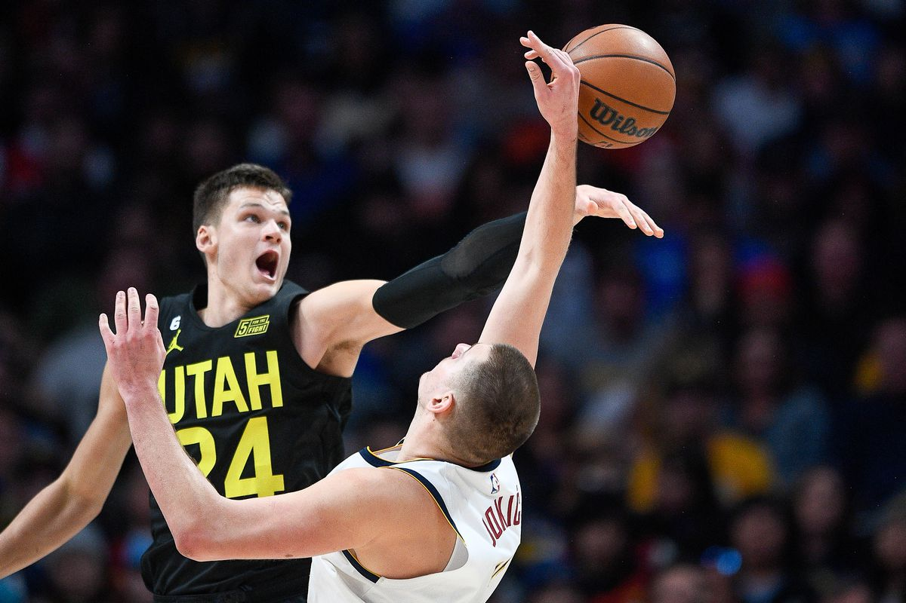
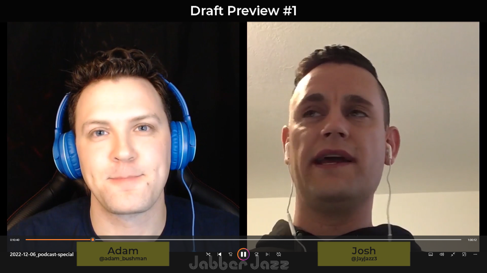
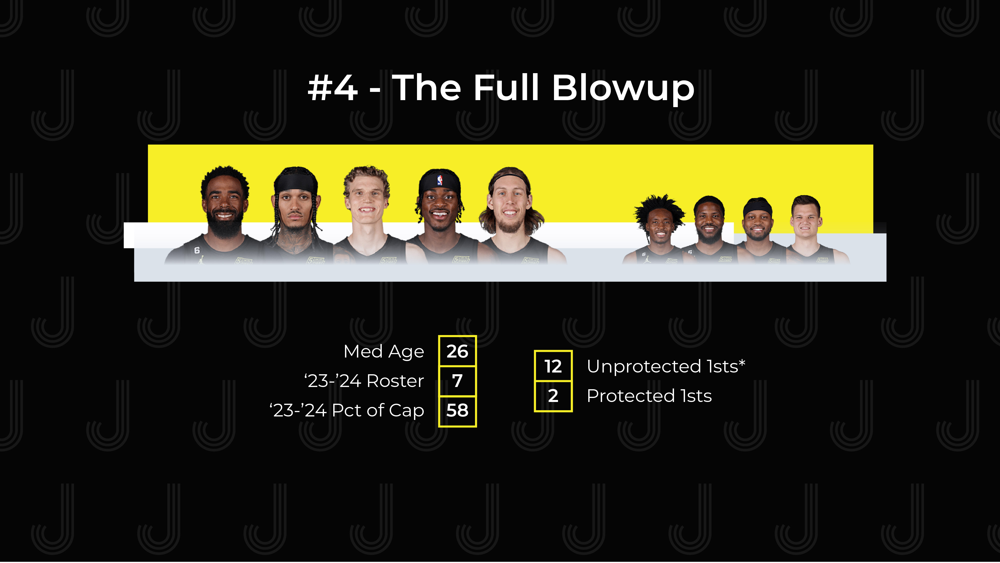
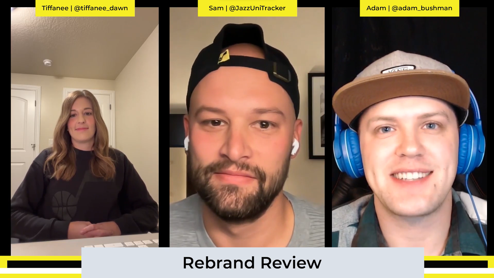
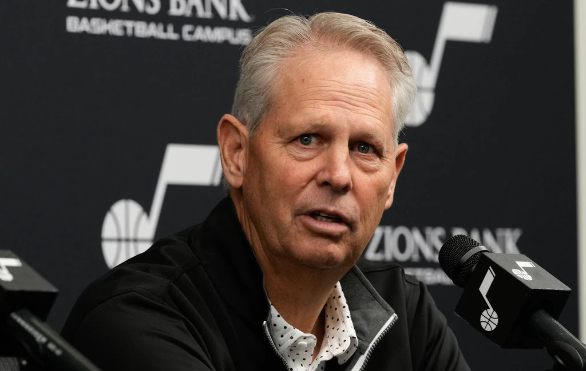
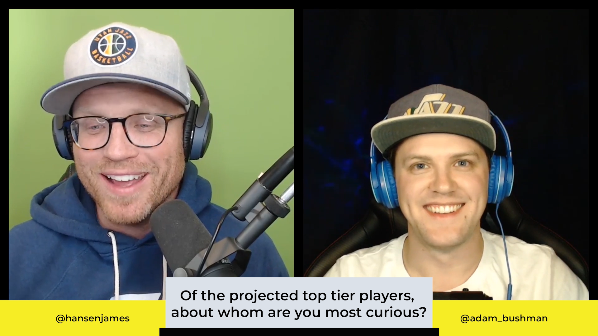
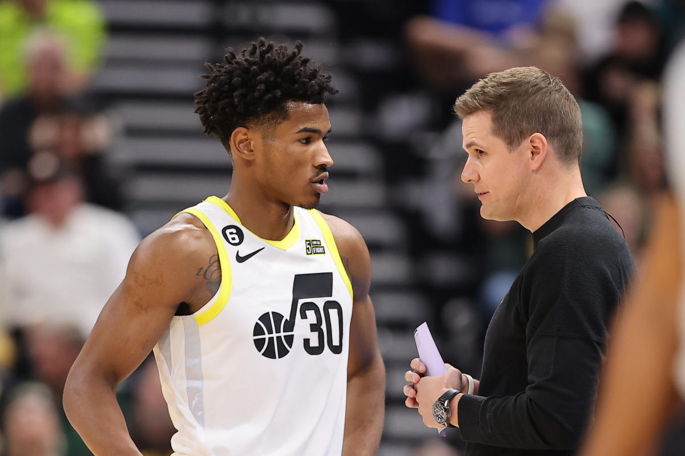
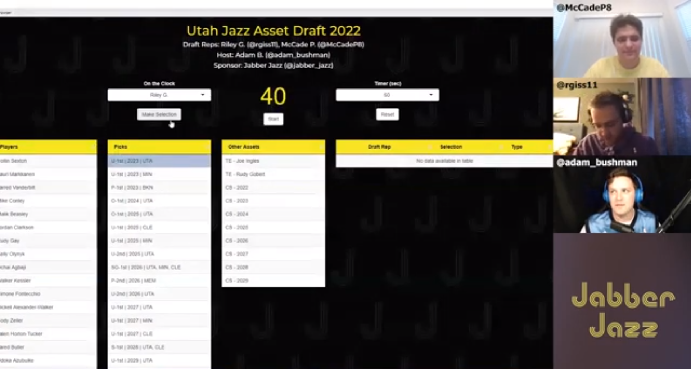
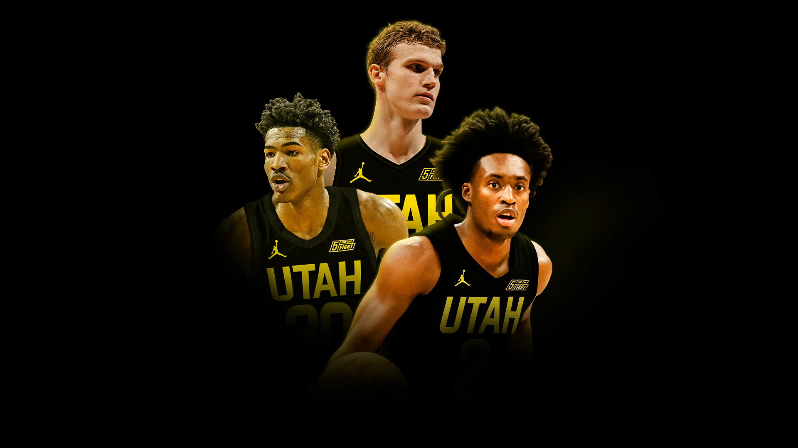
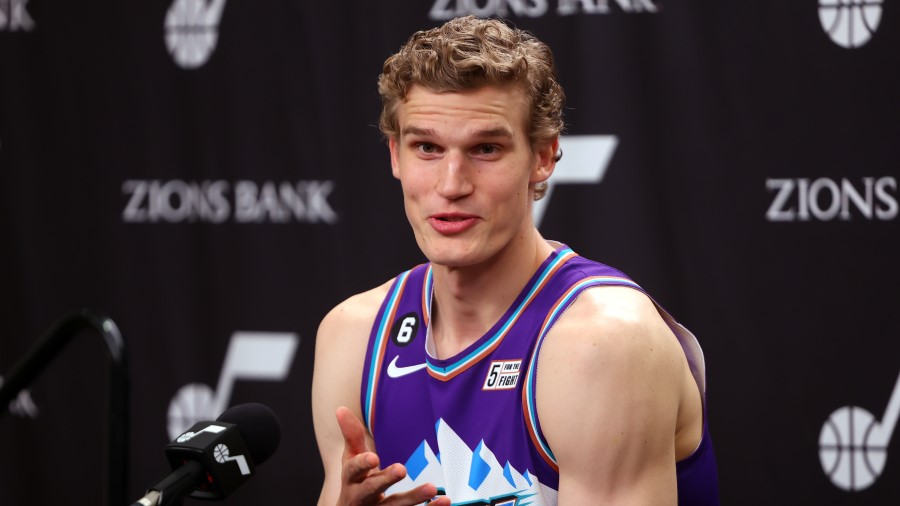

Today we tackle 5 topics in 5 minutes each, beginning with Walker Kessler and ending with how the Jazz are uniquely positioned to lean into any direction with success.

Today we’re joined by Josh Roberts to take our first look ahead to the 2023 NBA Draft. We review his big board and tackle some of the interesting wrinkles thus far.
Today we take a temperature check on Utah’s strengths and weakness, muse about potential trades, and identify past NBA team comparisons.

Today we’re joined by Ken Clayton of Salt City Hoops to look retrospectively at the Jazz offseason. We analyse four directions the team could have gone and ponder if the Jazz chose the right one.

Today we’re joined by Jazz Super Fan Tiffanee and Sam of Jazz Uni Tracker to review the Utah Jazz rebrand. With all components in the rearview, what’s actually good/bad? What’s the legacy of the rebrand? And what would we change given the chance in the future?

Today we talk about the decision fast approaching Ainge and the front office on where to take this team. We throw out a player upgrade idea and reasons behind it. We wrap up with five, not-so-outlandish takes on this year’s team.
Today praise Coach Will Hardy for an impressive job in the early season leading the Jazz to an 8-3 record. We also look to answer the question of if ‘tanking’ is over?
Today we break down a wild start for the Utah Jazz and highlight specific items that contribute to the surprising start. We turn from macro to micro by identifying a stat for each rotation member that encapsulates the start.

The season is here! James and I get you ready as we count down the hours to Utah Jazz basketball once more. We dive into roster construction, rotation wrinkles, percolating storylines, and settle on some predictions.

Today we summarize recent roster news and share updated thoughts on who might get cut ahead of the regular season. We then discuss what defines success this season and why we should change our perspective from ‘Victor or bust to ’Guanantee a franchise-level player’.

Today we’re joined by mock GMs to draft Utah Jazz assets. What would they prioritize for building a team going forward?

The season is here! James and I get you ready as we count down the hours to Utah Jazz basketball once more. We dive into roster construction, rotation wrinkles, percolating story lines, and settle on some predictions.

Kicking off the return of Jabber Jazz, we dive into impressions from Utah Jazz Media Day from all the official statements.